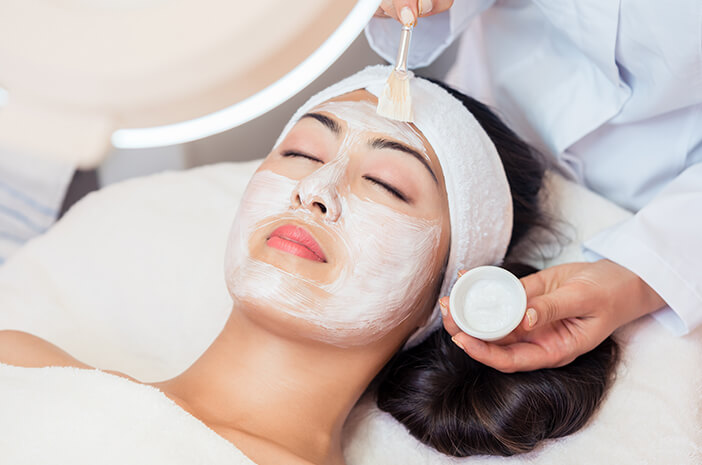

Pentingnya Perawatan Kulit
Perawatan kulit yang baik melibatkan menjaga kebersihan kulit melalui pembersihan yang teratur, penggunaan pelembap, serta perlindungan dari sinar matahari. Hal ini dapat mencegah masalah seperti jerawat, penuaan dini, dan kanker kulit.
Selengkapnya
